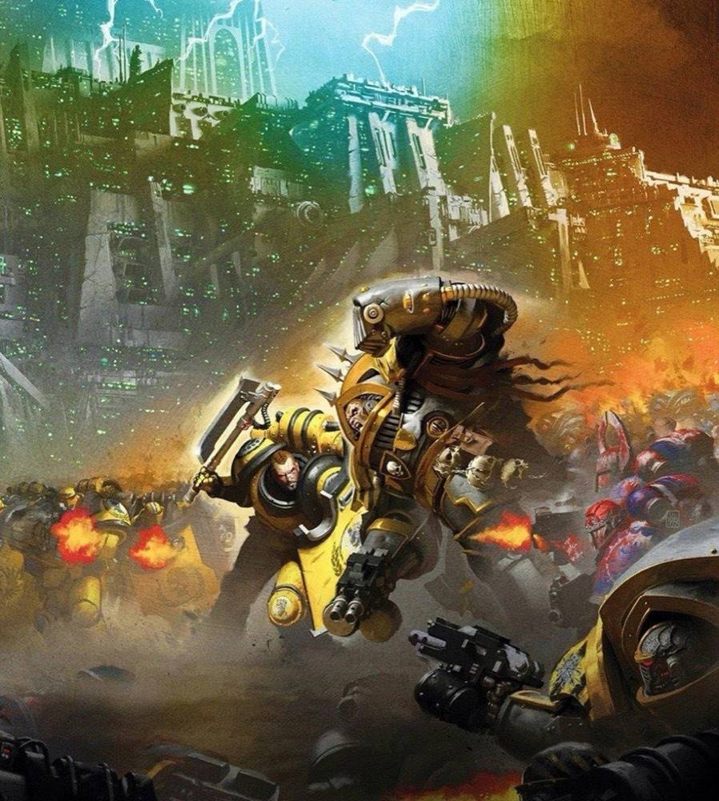
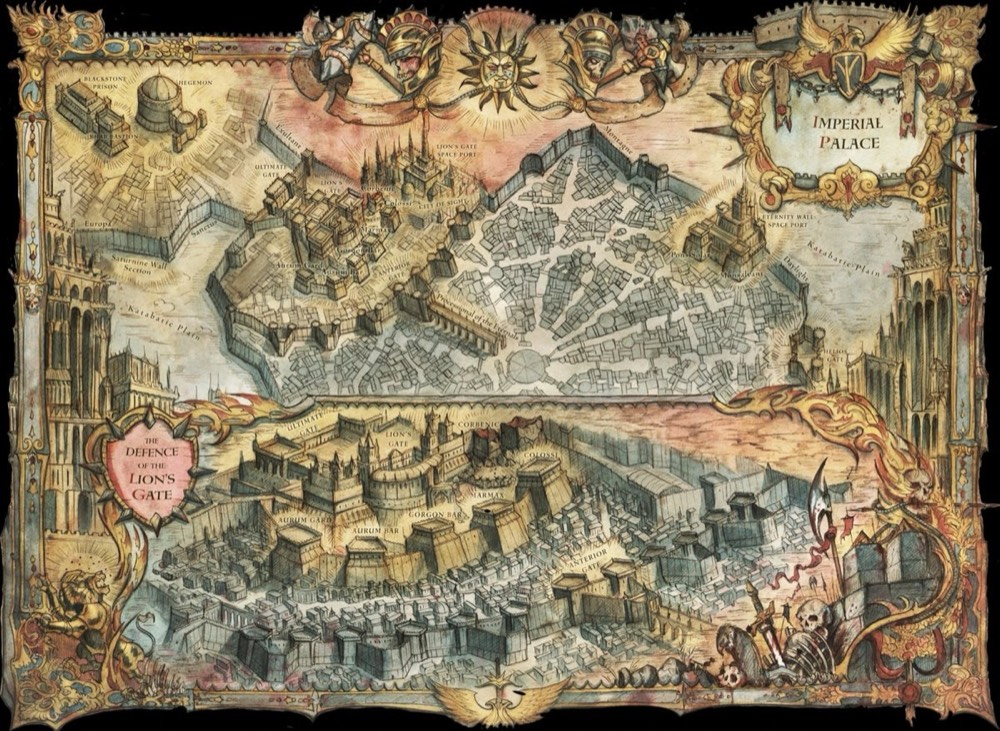

Battle of Lion's Gate
| Battle of Lion's Gate | |
|---|---|
| Part of the Siege of Terra, Horus Heresy | |
 Fafnir Rann in the defence of the Lion's Gate Spaceport, from a votive panel of the Imperial Fists Artwork © Games Workshop | |
| Date | 014.M31 (first battle on the eleventh of Quintus)[a] |
| Location | Lion's Gate Spaceport and the approaches to the Lion's Gate, Imperial Palace, Terra |
| Result | First battle: traitor victory, spaceport taken. Second battle: loyalist victory, spaceport retaken; Mortarion banished |
| Belligerents | |
| Loyalists | Traitors |
| Commanders and leaders | |
| † Killed in action · (WIA) Wounded | |
| Units involved | |
| Strength | |
| Casualties and losses | |
| A million lives were spent to gain a few kilometres, by Dorn's own reckoning. Mortarion was struck down and banished by the Khan at the cost of a wound that nearly killed him. | |
The Battle of Lion's Gate is the name given to the two battles fought for the Lion's Gate Spaceport, the greatest port on Terra, during the Siege of Terra in 014.M31. The spaceport stood beside the Lion's Gate of the Imperial Palace and was the strongest point of the Palace's outer defences. In the first battle, early in the land assault, the traitor Legions under the command of the Iron Warriors stormed it and drove out the Imperial Fists of Fafnir Rann. Its fall gave the Warmaster a landing ground for his armies and Titans in the very shadow of the Palace walls.[1][2]
Some weeks later Jaghatai Khan led the White Scars and the armour of the Imperial Army in a counter-attack that retook the spaceport from the Death Guard, who had made it their fortress. At its summit the Khan fought Mortarion and, at the cost of a wound that nearly killed him, struck down and banished the daemon primarch. The spaceport's guns were turned against the traitor fleet, and the White Scars held it to the end of the siege.[1][3]
Background
[edit]The Lion's Gate and its spaceport
[edit]The Lion's Gate was one of the great fortified portals of the Outer Palace, opening south of the Ultimate Gate and overlooking the Brahmaputra Plateau. It took its name from a sculpture of two gilded beasts that crowned it, rearing to lock claws. When Rogal Dorn fortified the Palace after the news of Isstvan in 005–006.M31, he had the beasts replaced with grey donjons studded with casemates and macro-gun ports, and ringed the gate with a curtain wall edged with void-shield vanes.[2]
Within its walls lay the Lion's Gate Spaceport, the largest surface-to-orbit port on Terra. It rose into the upper atmosphere, a mountain of docks, landing stages and space elevators able to receive a Gloriana-class battleship. Its outer layers, about a kilometre deep, were called the Skin. Beneath them lay the mantlezone and, at the centre, the innermost ten kilometres known as the Core Wards. Its batteries could reach ships in orbit.[2]

Dorn's dispositions
[edit]Dorn understood that whoever held the spaceport could land armies at the walls of the Palace. He made it the most heavily defended position on the outer line. Command was given to Fafnir Rann, Lord Seneschal of the Imperial Fists, with about 18,000 legionaries and nearly 800,000 soldiers of the Imperial Army.[2][4]
First battle
[edit]The assault
[edit]The Warmaster gave the assault to Perturabo, the Lord of Iron. Perturabo in turn gave direct command to his Warsmith Kroeger, judging that Dorn would expect him to lead such an important attack in person. Slave-beasts, serfs and mortal levies were sent at the outer lines first, followed by the legionaries. With the Iron Warriors came the World Eaters under Khârn, the Emperor's Children, and the Sons of Horus under Ezekyle Abaddon.[1][4]
The Imperial Fists held the first assaults. But the traitors had prepared other weapons. Warsmith Forrix and a thousand Iron Warriors infiltrated the port behind columns of renegade Imperial Army soldiers, some of whom turned their guns on their comrades. The Dark Mechanicum inserted a technophage into the port's systems, which corrupted its sensors and communications. And the Word Bearers sorcerer Zardu Layak, with Abaddon and the Death Guard's Typhus, performed a rite that brought a greater daemon of Nurgle, Cor'bax Utterblight, into the battle.[1]
The fall
[edit]Rann asked Dorn for reinforcements, and Sigismund came with three thousand Imperial Fists. Rann fought Kroeger hand to hand and was wounded, and was saved only by Sigismund's intervention. Zardu Layak was killed in the fighting. But the balance had turned. Dorn, unwilling to lose the garrison in a position that could no longer be held, ordered a withdrawal to the inner defences. The spaceport fell on the eleventh of Quintus. Perturabo landed Titans and consolidated it as the traitors' bridgehead.[1][4]
Palace records preserve the exchange between the two primarchs that followed. Perturabo measured the cost of the assault against the ground it had won. Dorn answered that it had taken a million lives to gain a few kilometres, and that this was only the first wall.[2]
Between the battles
[edit]The spaceport became the traitors' main landing ground. Through it came Titans, troops and supplies from the fleet, carried down in transports so large that Terra's surviving defence lasers made them their first targets. The Palace's outer lines fell one by one in the weeks that followed.[1]
The Iron Warriors did not remain. After a breach with the Warmaster, Perturabo withdrew his Legion from the siege, and the Lion's Gate passed to Mortarion and the Death Guard, who made it a fortress and a source of the plagues they spread across the Palace.[1][4]
Second battle
[edit]The Khan's plan
[edit]Jaghatai Khan, whose White Scars had led the mobile defence of the Palace, proposed to retake the spaceport. Its recapture would cut the traitors' main landing route and turn its batteries against their ships. Ilya Ravallion of the War Court gathered every armoured vehicle that could be spared into a new formation, the First Terran Armoured. Shielding from the Skye orbital plate covered the advance.[3][1]
The assault
[edit]Of the attacking groups, only the Khan's made real progress. It tore through the Death Guard and breached the port. The Khan fought his way up through its levels toward Mortarion's command centre near the summit.[3]

The duel
[edit]The two primarchs met on a landing stage high on the port. Mortarion fought with scythe and poison and overmatched the wounded Khan, breaking his armour and driving a blade into his body. Witnesses among the White Scars say that the Khan allowed the blow, drawing himself along the blade until he could strike, and took Mortarion's head. The daemon primarch's form was destroyed and his essence was banished into the Warp. The Khan collapsed.[3][1]
The White Scars, in a fury at their primarch's fall, drove the Death Guard out of the port. The Khan was carried into the Palace, where the Imperial physicians struggled to keep him alive.[3]
Aftermath
[edit]The White Scars held the Lion's Gate under Shiban Khan for the rest of the siege. For a time traitor scrap-code in the port's systems left its guns useless. They were later restored, and in the final phase of the siege the half-ruined spaceport's batteries fired on the traitor fleet in orbit.[3][5]
The spaceport was rebuilt after the Heresy, in the decades after 014.M31,[b] and remained the principal port of the Imperial Palace into the 41st millennium.[2]
Earlier records
[edit]Older summaries of the siege, compiled before the fuller Palace archives were opened, record the battle more simply. They state that the traitors took the Lion's Gate and Eternity Wall spaceports within hours of the first landings, that the Khan retook the Lion's Gate in a night raid with his White Scars and the surviving Imperial Army tank divisions, and that a loyalist attempt to retake the Eternity Wall failed. These accounts omit the Iron Warriors' assault and the duel with Mortarion, and are now regarded as incomplete.[4]
Legacy
[edit]The two battles for the Lion's Gate are among the best remembered episodes of the siege. The Imperial Fists honour the defence of Fafnir Rann and remember Dorn's answer to Perturabo. Among the White Scars the duel at the summit is counted the greatest deed of their primarch.[3][2]

Timeline
[edit]| Date | Event |
|---|---|
| 005–006.M31 | Rogal Dorn fortifies the Imperial Palace and has the beasts of the Lion's Gate removed. |
| 013–014.M31 | Fafnir Rann takes command of the Lion's Gate Spaceport with about 18,000 Imperial Fists and 800,000 Imperial Army troops. |
| 014.M31 | The traitor landings begin; Perturabo gives the assault to Warsmith Kroeger. |
| 014.M31 | Forrix infiltrates the port and a Dark Mechanicum technophage cripples its systems; Zardu Layak is killed. |
| 014.M31, 11 Quintus | Sigismund saves Rann; Dorn orders the garrison out and the spaceport falls. |
| 014.M31 | The spaceport becomes the traitors' main landing ground; the outer lines fall over the following weeks. |
| 014.M31 | Perturabo withdraws the Iron Warriors; Mortarion and the Death Guard fortify the port. |
| 014.M31 | Ilya Ravallion forms the First Terran Armoured; Jaghatai Khan leads the counter-attack. |
| 014.M31 | The Khan duels Mortarion at the summit, is gravely wounded and banishes him; the White Scars retake the port. |
| 014.M31 | Shiban Khan holds the port; its restored batteries fire on the traitor fleet in the final phase. |
| Mid M31 | The spaceport is rebuilt as the principal port of the Imperial Palace.[c] |
See also
[edit]Notes
[edit]- ^ The Imperial calendar of the siege is reconstructed from Palace records. The Logos Historica Verita gives the fall of the spaceport on the eleventh day of Quintus, in the early weeks of the land assault, and places the Khan's counter-attack some weeks later.
- ^ Date estimated from the sequence of events.
- ^ Date estimated from the sequence of events.
References
[edit]- ^ a b c d e f g h i Lee, Mike. Fallen Angels (novel). Black Library, pp. 31, 411-412. Thorpe, Gav. Angels of Caliban (novel). Black Library, Chs. 4, 21, 28, 35.
- ^ a b c d e f g Guymer, David. Dreadwing (novella). Black Library. Hammer & Bolter 17 & 18, "The Lion" (novella) Parts 1 and 2 by Gav Thorpe.
- ^ a b c d e f g Scalon, Mitchel. Descent of Angels (novel). Black Library. Thorpe, Gav. Angels of Darkness (novel). Black Library.
- ^ a b c d e Abnett, Dan. The Unremembered Empire (novel). Black Library. (Cover), David Guymer. Lion El'Jonson: Lord of the First (novel). Black Library.
- ^ Thorpe, Gav. Luther: First of the Fallen (novel). Black Library, "Tale of the Lion," "Tale of the Book". Codex: Dark Angels (6th Edition), pg. 38. Games Workshop.